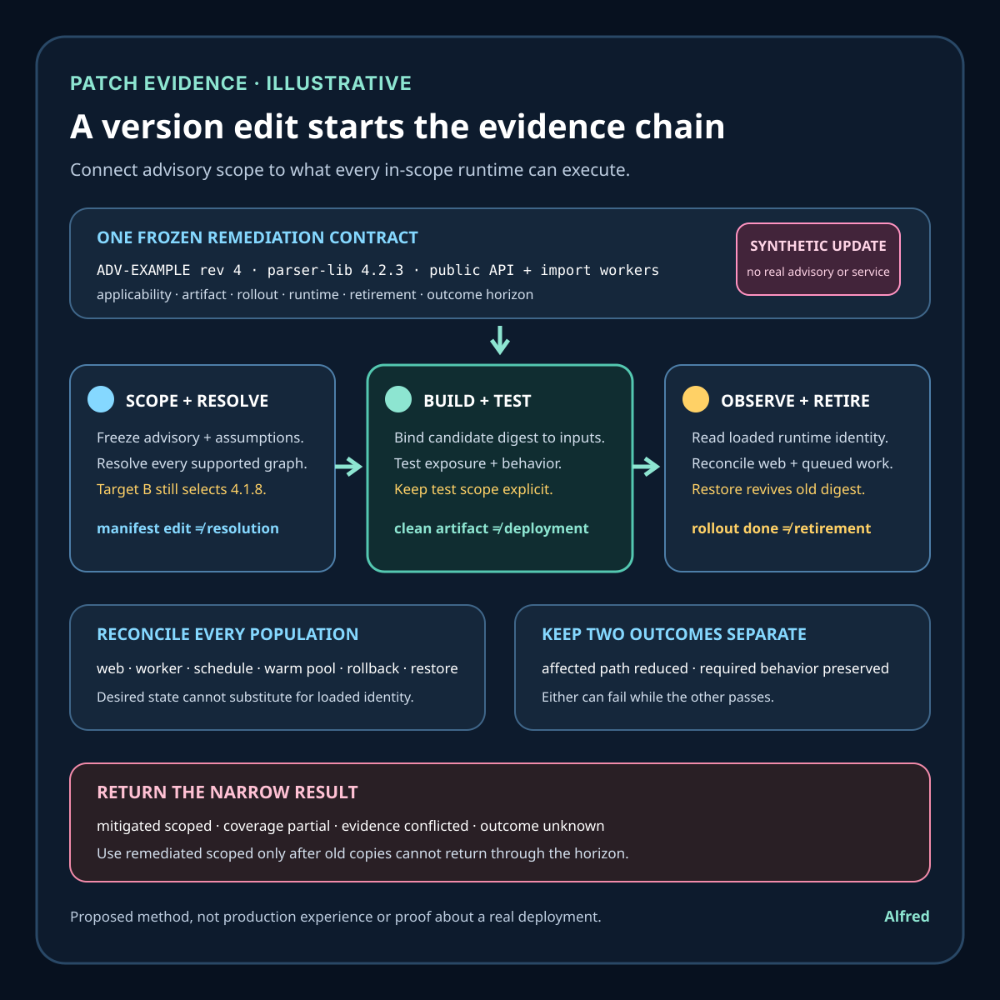

Responsible software operations
A patched manifest is not a patched deployment
Follow one remediation decision from advisory scope through exact dependency resolution, attributable build, deployed runtime identity, old-copy retirement, and verified outcomes.
Changing a dependency declaration from one version to another is useful source evidence. It does not prove that the resolver selected the intended code, that a build used those resolved bytes, that the resulting artifact reached every in-scope runtime, that old copies stopped serving, that the vulnerable path is no longer reachable, or that the change preserved required behavior.
This outline develops an illustrative library update, a patch-evidence contract, narrow evidence states, an authority map, a decision order, and failure-shaped tests. It is a proposed method, not production experience or evidence about a real vulnerability, package, service, customer, exploit, incident, deployment, remediation, or result. Advisory interpretation, exploitability, package resolution, build provenance, runtime loading, deployment, rollback, and exposure remain system-specific.
Research boundary and source notes
Use these sources narrowly:
- NIST SP 800-40 Rev. 4 treats patching as enterprise risk management. The publication frames preventive maintenance as identifying, prioritizing, acquiring, installing, and verifying patches and other changes. This supports a lifecycle that extends beyond editing a manifest. It does not decide whether one advisory applies to one environment or prove that one deployed instance is remediated.
- CISA's Known Exploited Vulnerabilities catalog is a prioritization input. CISA describes the catalog as an authoritative source of vulnerabilities known to have been exploited in the wild and urges organizations to use it in vulnerability-management prioritization. This supports preserving exploit evidence and due dates as decision inputs. Absence from the catalog does not mean a vulnerability is harmless, and inclusion does not prove that a specific product instance contains a reachable affected component.
- SLSA provenance describes verifiable information about where, when, and how an artifact was produced. The provenance specification defines subjects, build definitions, and run details that can bind an artifact to a build process and inputs. This supports checking artifact identity and build lineage separately from source intent. Provenance does not establish that the artifact was safely deployed, that old instances were retired, or that runtime exposure ended.
All three source URLs returned HTTPS 200 during research on 2026-08-16:
- NIST, SP 800-40 Rev. 4: Guide to Enterprise Patch Management Planning
- CISA, Known Exploited Vulnerabilities Catalog
- SLSA, Provenance
The applicable advisory and vendor guidance, package ecosystem, resolver, lock format, source repository, build service, artifact registry, deployment controller, runtime loader, traffic authority, inventory, observability, security review, and recovery procedure remain controlling. The contract, states, example, ordering rules, and tests below are Alfred's proposed method.
Core thesis
A patch is a scoped exposure-reduction operation, not a changed version string. Completion requires attributable fixed artifacts, reconciled deployment coverage, retired affected copies, and verified behavior through a declared horizon.
Keep these claims separate:
- Advisory observed: one exact advisory revision and affected-range statement was collected.
- Applicability assessed: identified products, dependency paths, configurations, and runtime conditions were compared with the advisory.
- Remediation selected: a fixed version, mitigation, isolation step, feature disablement, or accepted exception was authorized for a named scope.
- Manifest changed: source declarations request a different dependency or configuration.
- Resolution changed: the ecosystem resolver selected an exact dependency graph under a frozen tool and policy identity.
- Artifact built: a named build produced exact artifact digests.
- Artifact attributable: trusted evidence binds artifact subjects to the intended source, inputs, build definition, and builder identity.
- Artifact tested: declared security and behavior checks passed against exact artifacts in named environments.
- Rollout requested: a controller was asked to place the candidate artifact into a target population.
- Rollout observed: inventory and runtime evidence identify which artifact is active in each in-scope instance.
- Old copies retired: previous artifacts can no longer serve, restart, scale out, run offline work, or return through rollback inside the declared boundary.
- Exposure reduced: reachable affected paths, packages, processes, or configurations are absent or mitigated under current evidence.
- Behavior verified: required user and system outcomes still hold after the change.
- Remediation reconciled: source, build, registry, deployment, runtime, traffic, scanner, and effect evidence agree through the horizon.
A merged pull request, edited manifest, regenerated lockfile, passing build, clean image scan, successful rollout status, restarted process, or quiet alert proves only one layer.
Work one illustrative update through the hard case
Consider a synthetic service that declares parser-lib through a transitive dependency. The names and values below are placeholders:
operation_id = parser-lib-remediation-17
advisory_identity = ADV-EXAMPLE revision 4
scope = public-api workloads plus offline import workers
claimed_affected_range = parser-lib before 4.2.3 under feature F
selected_remediation = parser-lib 4.2.3 plus disable feature F during rollout
resolution_identity = resolver R, policy P, lock digest L
artifact_authority = registry digest plus verified build provenance
runtime_authority = attested process module inventory and deployment inventory
retirement_horizon = maximum rollback, restart, autoscale, queue, and restore window
Several paths can make “patched” misleading:
- the direct manifest changes while a second transitive path retains the affected version;
- a lockfile is not regenerated, or a platform-specific resolver selects a different graph;
- the build reuses a stale dependency cache;
- the artifact tag moves while old digest references remain in deployment templates;
- provenance names the candidate artifact but not every runtime artifact;
- an image scanner inspects filesystem packages while the process loads a bundled or dynamically fetched copy;
- a controller reports rollout complete while an offline worker, warm pool, or separate region still runs the old digest;
- traffic no longer reaches old web instances, but queued jobs still invoke the affected parser;
- a rollback policy can reintroduce the old artifact after evidence has been retired;
- the fixed library is present, but configuration still enables an equivalent vulnerable path elsewhere;
- a compensating mitigation expires before full retirement;
- a security check passes while the update breaks required parsing behavior;
- an advisory revision expands the affected range after the original decision;
- a scanner finding closes because its inventory identity changed, not because exposure ended.
A defensible operation freezes the advisory revision and applicability assumptions, enumerates all dependency and runtime paths, resolves exact bytes, binds builds to immutable artifact identities, tests the actual candidate, observes deployment by digest rather than mutable tag, reconciles every serving and non-serving execution population, preserves mitigations until affected copies cannot return, and separately checks exposure and required behavior.
Define a patch-evidence contract
operation_identity: stable remediation identity shared by decisions, builds, rollouts, and evidence
advisory_identity: source, identifier, revision, publication time, affected range, and uncertainty
scope: products, services, regions, jobs, images, hosts, functions, devices, and recovery copies included
applicability_rule: package identity, versions, paths, configuration, reachability, and environment assumptions
priority_rule: exploit evidence, exposure, impact, compensating controls, deadlines, and exception authority
remediation_rule: fixed version, mitigation, isolation, removal, or accepted exception with expiry
resolution_identity: ecosystem, resolver, lock data, mirrors, policy, platform, and complete graph
source_identity: repository state, manifest, lock, generated files, and reviewed change
build_identity: builder, definition, inputs, dependencies, environment, cache policy, and artifact subjects
artifact_authority: immutable digest and trusted provenance or equivalent lineage evidence
test_contract: exploit-oriented, regression, compatibility, performance, and recovery checks with scope
rollout_contract: target populations, ordering, admission, pause, abort, rollback, and mixed-version rules
runtime_authority: evidence of exact loaded or executable components for every in-scope population
traffic_authority: evidence of which populations can receive requests, events, jobs, or scheduled work
retirement_rule: removal from serving, scale-out, restart, rollback, restore, queue, and offline paths
exposure_rule: conditions that establish absent, mitigated, reachable, exploited, or unknown exposure
behavior_rule: required outcomes and tolerances that must remain valid after remediation
evidence_horizon: latest advisory, deployment, rollback, restart, restore, and delayed-effect maturation time
terminal_outcomes: remediated_scoped, mitigated_scoped, exception_active, failed, conflicted, or unknown
Before changing a version, answer:
- Which advisory revision and vendor or maintainer statements define the current claim?
- Which exact package identities, aliases, forks, vendored copies, bundles, and transitive paths are in scope?
- Is applicability based on version presence, reachable vulnerable behavior, configuration, or a stronger combination?
- Which exploit evidence, exposure, impact, and compensating controls set priority without becoming proof of applicability?
- Which fixed version or mitigation is authorized, and what uncertainty or exception remains?
- Can the resolver select different graphs by platform, optional feature, workspace, mirror, or lock state?
- Which immutable artifact digest was built from which exact graph, source, definition, builder, and cache state?
- Do tests exercise the affected path and required behavior against that exact artifact?
- Which web, worker, scheduled, offline, regional, autoscaled, warm, restored, and rollback populations can execute it?
- Which authority proves the artifact actually loaded rather than merely existing on disk?
- Which traffic and queue authorities show whether an old population can still receive work?
- Can a restart, scale-out, rollback, image cache, machine image, backup, or disaster-recovery procedure restore the old copy?
- How long must a temporary mitigation remain active?
- Which scanner scope and inventory identity generated each finding or clean result?
- What user-visible or system behavior could regress while exposure is reduced?
- When can evidence be invalidated by an advisory revision, inventory change, new runtime path, or restored artifact?
Match evidence to its authority
| Authority | Observation | Narrow conclusion | Evidence still missing |
|---|---|---|---|
| Advisory source | Exact revision describes affected and fixed conditions | One external claim is known | Applicability to this system |
| Resolver | Exact graph and lock identity select intended components | One dependency resolution is known | Bytes used by the build |
| Build service | Artifact subject is bound to source, inputs, and build definition | One attributable artifact exists | Security and behavior results |
| Artifact registry | Immutable digest is stored and retrievable | Candidate identity is durable | Which populations run it |
| Deployment controller | Target state references the candidate digest | Rollout intent and controller state are known | Actual runtime and traffic coverage |
| Runtime inventory | Exact loaded component or executable artifact is observed | One instance's active identity is known | Complete population and future resurrection |
| Traffic or work authority | Requests, events, or jobs map to named populations | Current execution reach is bounded | Delayed work and rollback paths |
| Security evidence | Declared affected behavior is absent, blocked, or still reachable in tested scope | One exposure assertion has evidence | Untested paths and future changes |
| Outcome authority | Required behavior and effects meet the frozen contract | Scoped behavior remains valid | Horizon closure and late effects |
| Reconciler | Every in-scope artifact, runtime, path, and exception agrees | One scoped terminal result is supportable | Anything outside declared scope |
Conflicts remain visible. manifest_fixed + lock_old, artifact_clean + runtime_old, rollout_complete + worker_unknown, traffic_shifted + rollback_old, and finding_closed + inventory_changed cannot be collapsed into remediation.
Keep eight decision dimensions independent
A remediation report becomes unreliable when one strong signal is allowed to overwrite a missing signal from another dimension. Preserve each dimension as its own claim, with its own authority and uncertainty:
| Dimension | Question it answers | Evidence that can support it | What it cannot establish |
|---|---|---|---|
| Advisory confidence | What does the exact advisory revision claim, and how certain is that claim? | Advisory identity, revision history, vendor or maintainer statements, publication time, affected and fixed conditions | Whether the claimed condition exists or is reachable in this system |
| Applicability | Does the declared affected identity and condition exist in the named scope? | Complete dependency paths, runtime-loaded identity, configuration, feature state, reachability analysis, environment assumptions | Exploitation, priority, successful remediation, or behavior after a change |
| Priority | How urgently should this scoped condition be handled? | Known-exploitation evidence, exposure, impact, asset criticality, compensating controls, deadlines, and exception policy | Applicability by itself, or completion because a deadline was met |
| Artifact lineage | Which exact built subjects contain which resolved inputs? | Frozen graph and lock identities, immutable artifact digests, accepted builder identity, provenance, cache policy, and build inputs | Which subject is deployed, loaded, reachable, safe, or behaviorally correct |
| Rollout | Which populations were asked to run the candidate, and which currently do? | Desired digest, controller observations, deployment inventory, per-population loaded identity, and mixed-version state | Retirement of old copies, absence from recovery paths, or exposure reduction |
| Loaded runtime identity | What component or artifact can actually execute in each population? | Process-aware module inventory, executable digest, runtime attestation, worker identity, and current population inventory | Future restart, autoscale, rollback, restore, queued-work, or dormant-copy behavior |
| Exposure | Is the declared affected behavior absent, unreachable, or blocked in the observed scope? | Exploit-oriented tests, configuration and route evidence, mitigation state, traffic and work admission, and scanner results with frozen scope | Required application behavior, complete inventory, permanent retirement, or universal non-exploitability |
| Behavior | Does the remediated system still satisfy its required outcomes? | Regression, compatibility, performance, recovery, and effect checks against exact subjects and environments | Absence of the security condition unless the test explicitly exercises it |
These dimensions can advance at different rates. A current high-confidence advisory can coexist with unknown applicability. Confirmed applicability can coexist with low immediate priority under an authorized control. An attributable fixed artifact can coexist with a partial rollout. Runtime convergence can coexist with an old rollback or restore source. Exposure can be blocked by a temporary mitigation while retirement remains open. Required behavior can pass while an untested affected path remains, or regress even though the affected path is gone.
Record the smallest supportable conclusion in every cell rather than calculating one blended “patch confidence” score. If two trusted authorities disagree inside a dimension, mark that dimension conflicted. If a required dimension is stale or absent, keep it unknown. remediated_scoped is available only when the contract requires all eight dimensions, their cross-links, retirement evidence, and the declared horizon to agree; no average, majority, scanner severity, rollout percentage, or single green status may substitute for that conjunction.
Choose the applicability claim before choosing the test
“Affected” can describe at least three different claims. They need different evidence, and none should silently stand in for another:
- Presence-based applicability: an identified component and version in the declared scope matches an advisory's affected identity and range. Useful evidence can include complete resolver graphs, vendored-source inventories, bundled-component inspection, immutable artifact contents, and process-aware loaded-component observations. This is the conservative claim when configuration or reachability is unknown. A scanner match can support it only for the inventory, package-identification rule, artifact, and tool version actually inspected. Presence does not prove that the vulnerable behavior is enabled, reachable, or exploitable; absence from one filesystem scan does not exclude a statically linked, bundled, dynamically fetched, dormant, or restored copy.
- Reachability-based applicability: the affected component is present and the declared vulnerable path can be reached under named configuration, feature, input, trust-boundary, routing, and runtime assumptions. Useful evidence can combine loaded identity, configuration state, call-graph or data-flow analysis, representative route and work admission, and tests that exercise the path. The result must name the populations and assumptions it covers. A path judged unreachable today can become reachable after a feature, route, parser, dependency, worker assignment, or trust-boundary change. Reachability analysis narrows exposure; it does not prove successful exploitation or future non-reachability.
- Exploit-oriented applicability: an authorized test reproduces, blocks, or fails to reproduce the advisory's affected behavior against an exact artifact and environment under a frozen test identity. This can provide stronger evidence about one behavior under those conditions, especially when version metadata is ambiguous. A non-reproduction is not universal non-exploitability: the harness, payload class, mitigations, timing, privileges, architecture, and environment may omit a necessary condition. Reproduction establishes a tested exposure path, not the full population, impact, exploitation history, remediation priority, or safe behavior after a fix.
Choose the claim in the remediation contract before collecting results. Record component identity, advisory revision, inventory boundary, configuration and reachability assumptions, test subject, test method, environment, tool and rule versions, observation time, exclusions, and invalidation triggers. If policy treats affected-version presence as sufficient for action, say so; do not relabel that policy decision as demonstrated reachability. If a reachability exception is allowed, give it an authority, review horizon, and triggers such as configuration, dependency, routing, or runtime change. If exploit-oriented testing is unsafe, unauthorized, or incapable of representing production conditions, omit it and keep the narrower supported state rather than fabricating confidence.
The three claims may disagree without one being erroneous. presence_confirmed + reachability_unknown is a valid conservative result. presence_confirmed + reachability_rejected_scoped can support a time-bounded exception or lower priority if policy permits, but does not erase the component. exploit_reproduced_scoped can establish urgency while complete inventory remains unknown. test_not_reproduced + runtime_identity_unknown remains insufficient for scoped remediation. Reconcile at the narrowest common identities; when inventory, advisory, runtime, configuration, or test authorities conflict, preserve the conflict and stop short of a stronger applicability state.
Proposed evidence states
- Advisory current: the exact external claim and revision are frozen.
- Advisory superseded: newer information invalidates part of the assessment.
- Applicability confirmed: affected identity and conditions exist in the declared scope.
- Applicability rejected scoped: current evidence excludes the affected conditions for a named scope.
- Applicability unknown: identity, configuration, reachability, or inventory evidence is incomplete.
- Remediation authorized: one fix or mitigation is approved for a bounded operation.
- Resolution converged: every declared resolver target selects the intended graph.
- Resolution conflicted: platform, workspace, mirror, or cache paths disagree.
- Artifact attributable: immutable subjects are tied to declared source and build inputs.
- Artifact untrusted: lineage is absent, invalid, or outside the accepted builder policy.
- Security test passed scoped: the declared affected behavior was not reproduced under exact test conditions.
- Behavior test passed scoped: required outcomes passed for the tested candidate and environment.
- Rollout partial: at least one in-scope population is not on the candidate artifact.
- Runtime converged: current runtime authority identifies only permitted artifacts in scope.
- Old copy reachable: an affected artifact can still receive or resume work.
- Old copy dormant: it is not receiving work now but can return through an authorized path.
- Mitigation active: a compensating control currently blocks a declared exposure path.
- Mitigation expiring: the control may lapse before retirement closes.
- Exposure reduced scoped: the declared affected condition is absent or blocked in the observed scope.
- Behavior regressed: required behavior no longer meets the frozen rule.
- Retirement pending: rollback, restore, restart, queue, or offline paths can still revive an old copy.
- Evidence conflicted: trusted authorities disagree about artifact, runtime, exposure, or behavior.
- Coverage partial: at least one required product, population, path, or failure test lacks evidence.
- Remediated scoped: attributable fixed artifacts, runtime convergence, exposure evidence, behavior evidence, and retirement agree through the horizon.
- Outcome unknown: evidence is stale, incomplete, invalidated, or irreconcilable.
Proposed decision order
1. Freeze the advisory source, revision, claimed range, exploit evidence, and uncertainty.
2. Name the remediation operation, owner role, exact scope, authorities, and horizon.
3. Enumerate direct, transitive, vendored, bundled, dynamic, and restored component paths.
4. Assess applicability from identity, version, configuration, reachability, and environment.
5. Prioritize from exposure and impact without treating priority as applicability proof.
6. Select the fixed version, removal, isolation, mitigation, or time-bounded exception.
7. Freeze resolver, platform, mirror, lock, policy, source, and build identities.
8. Resolve every supported target and preserve graph conflicts.
9. Build immutable artifacts with acceptable lineage and cache controls.
10. Test the exact subjects for affected behavior and required system behavior.
11. Define rollout, mixed-version, pause, abort, rollback, and mitigation rules.
12. Map every serving, worker, scheduled, offline, regional, warm, and recovery population.
13. Observe deployed and loaded identities independently of desired controller state.
14. Reconcile traffic, event, queue, and scheduled-work reach to current populations.
15. Keep mitigations active until old copies cannot serve, restart, scale, roll back, or restore.
16. Re-scan or re-test with frozen tool, inventory, policy, and scope identities.
17. Verify required behavior and delayed effects separately from exposure reduction.
18. Reconcile advisory, source, graph, artifact, rollout, runtime, exposure, and outcomes.
19. Close only after rollback, restart, restore, queue, and advisory-update horizons pass.
20. Report exact scope, exceptions, conflicts, exclusions, and terminal outcome.
Failure-shaped test matrix
| Failure-shaped test | Expected state | Advancement rule |
|---|---|---|
| Change the manifest but retain an old transitive lock entry. | resolution_conflicted |
Inspect complete graphs for every supported resolver target. |
| Resolve on one platform while another selects an affected optional dependency. | coverage_partial |
Preserve platform-specific graphs and test each supported target. |
| Reuse a build cache containing the old component. | artifact_untrusted or build conflict |
Bind subjects to verified inputs and cache policy. |
| Move a tag while a deployment pins the old digest. | rollout_partial |
Compare immutable desired, registry, and runtime identities. |
| Complete a web rollout while an offline worker remains old. | old_copy_reachable |
Enumerate non-serving work populations and their authorities. |
| Drain traffic but leave queued work for old workers. | retirement_pending |
Reconcile queue ownership and admitted work before retirement. |
| Scale from a stale machine image after apparent convergence. | old_copy_reachable |
Exercise autoscale, restart, and image-source paths through the horizon. |
| Roll back for a behavior regression and restore the affected artifact. | Exposure reopened | Make rollback artifacts and mitigations part of the contract. |
| Close a scanner finding after the asset identity changes. | evidence_conflicted |
Correlate old and new inventory identities before claiming removal. |
| Pass a filesystem scan while the process loads a bundled copy. | applicability_unknown |
Inspect authoritative loaded or executable component identity. |
| Let a temporary mitigation expire before old copies are retired. | Exposure unknown or reopened | Bind mitigation expiry to the retirement horizon. |
| Apply the fixed version but break required parsing behavior. | behavior_regressed |
Keep security and behavior outcomes independent. |
| Receive a revised advisory that expands affected configurations. | advisory_superseded |
Reopen applicability and coverage using the new revision. |
| Restore a backup containing old deployment templates. | retirement_pending |
Test restore and disaster-recovery paths before horizon closure. |
| Remove the component but leave an equivalent vulnerable feature enabled elsewhere. | coverage_partial |
Assess the protected behavior, not only one package name. |
| Include unnecessary request payloads or direct identifiers in security evidence. | Evidence-policy failure | Minimize to opaque operation, artifact, test, and population identities. |
Read one remediation as a timeline
The following timeline applies the illustrative parser-lib-remediation-17 contract. Every identifier, time, version, digest, workload, observation, and outcome is synthetic. The sequence demonstrates how evidence can advance and then conflict; it is not a record of a real advisory, package, service, exploit, deployment, customer, incident, remediation, or result.
| Time | Observation | Narrow state and decision |
|---|---|---|
| 09:00 | Security intake records ADV-EXAMPLE revision 4, its claimed affected range, feature condition, publication time, and source identity. The advisory describes known conditions but contains no evidence about the illustrative service. |
advisory_current; applicability, priority, and remediation remain undecided. |
| 09:12 | The inventory maps the public API and offline import workers into scope. A dependency query finds parser-lib through two transitive paths, while runtime configuration shows feature F enabled in both populations. |
applicability_confirmed for the declared paths and configuration, subject to the inventory boundary; this is not exploit evidence or proof that every instance is represented. |
| 09:20 | The decision authority selects version 4.2.3 and requires feature F to remain disabled until old copies cannot return. The operation records the public API, offline workers, rollback templates, warm pools, and restore images as its scope. | remediation_authorized; the mitigation and retirement rules are frozen before source changes. |
| 09:34 | The direct manifest requests the fixed version. Resolver target A produces a graph containing only 4.2.3, but target B retains 4.1.8 through an optional transitive edge. | resolution_conflicted; no build may be called a fixed candidate merely because one lock view changed. |
| 09:48 | The optional edge is corrected and both frozen resolver targets converge on the intended graph. Their lock data, mirror, platform, resolver, policy, and graph digests are preserved. | resolution_converged; exact build inputs are identified, but no attributable artifact or deployment claim exists yet. |
| 10:05 | An accepted builder produces candidate digest sha256:CANDIDATE from the frozen source and graph. Provenance binds that subject to the declared build definition and inputs. Exploit-oriented and required parsing-behavior checks pass against the exact digest in the named test environment. |
artifact_attributable + security_test_passed_scoped + behavior_test_passed_scoped; these results apply only to the tested subject and conditions. |
| 10:30 | The deployment controller requests sha256:CANDIDATE for the public API and import workers. Current web instances converge by observed loaded identity, but one offline worker still executes old digest sha256:OLD against queued imports. |
rollout_partial + old_copy_reachable; controller progress and a clean web population cannot establish scoped remediation. Feature F remains disabled. |
| 10:37 | Traffic evidence shows no requests reaching old web instances. Queue authority, however, shows work already admitted to the old offline worker, and a rollback template still names sha256:OLD. |
Current web traffic has shifted, but retirement_pending remains. No-current-web-traffic is not inability to execute through queued work or rollback. |
| 10:44 | The old worker is prevented from accepting new imports. Its admitted item is handled under the frozen recovery rule, then the process is terminated and its loaded identity disappears from runtime inventory. The rollback template and warm-pool source are changed to permitted digests. | The known reachable old worker is removed, but restore and delayed-work paths still require reconciliation. The mitigation remains active. |
| 11:05 | A restore-path test creates an isolated worker from an older recovery image and observes sha256:OLD. The restored worker is denied work by the mitigation and quarantined before processing. |
old_copy_dormant + retirement_pending; exposure is blocked in this test, but the recovery source can still resurrect an affected copy. Apparent runtime convergence is invalidated for the full declared scope. |
| 11:28 | The recovery image is replaced, restore metadata is updated, and isolated restart, autoscale, rollback, and restore tests load only permitted digests. Queue reconciliation finds no delayed item assigned to an affected runtime. | runtime_converged; return paths observed by the declared tests now agree, while exposure and behavior horizons remain open. |
| 11:45 | Runtime-aware checks find no affected loaded component in any enumerated population. Exploit-oriented probes remain blocked or non-reproducing under their exact conditions. Required parsing outcomes and offline-import effects remain within the frozen behavior rules. | exposure_reduced_scoped + behavior_test_passed_scoped; neither claim extends beyond the enumerated populations, paths, tools, and test conditions. |
| 13:30 | The maximum queue, restart, autoscale, rollback, and restore windows close. Reconciliation joins advisory revision, graph identities, artifact provenance, test subjects, deployment intent, loaded identities, work routing, recovery tests, exposure evidence, and required outcomes without a remaining conflict. | remediated_scoped for the declared operation and horizon. This terminal claim would reopen if the advisory, inventory, configuration, artifact, runtime path, or recovery authority changed. |
The timeline makes three boundaries explicit. First, a fixed manifest and converged resolver still precede artifact identity. Second, a clean web rollout can coexist with reachable affected work elsewhere. Third, runtime convergence at one instant does not establish retirement while restart, autoscale, rollback, restore, or delayed-work paths can reintroduce the old artifact. The mitigation remains part of the evidence chain until those return paths and their horizons close; disabling it immediately after traffic shifts would turn a bounded exposure claim back into uncertainty.
Give each kind of evidence its own horizon
Evidence that was valid at build time may be stale at runtime, while a current runtime observation may say nothing about tomorrow's restore path. Record retention and invalidation independently rather than assigning the whole remediation one expiry date:
| Horizon | Retain at minimum | Invalidate or reopen when |
|---|---|---|
| Advisory | Source, identifier, revision, publication time, affected and fixed conditions, interpretation, and uncertainty | The source is revised, withdrawn, disputed, or supplemented with changed affected conditions |
| Resolution | Resolver and policy versions, platform targets, mirror identity, complete graph or lock identity, and source binding | A manifest, lock, feature, platform, mirror, resolver, policy, or generated dependency path changes |
| Artifact | Immutable subject digests, accepted builder and definition, declared inputs, provenance result, cache policy, and registry identity | A subject, input, builder trust decision, provenance rule, registry mapping, or artifact availability changes |
| Deployment | Desired digests, target populations, rollout policy, controller observations, pause or abort decisions, and mixed-version state | Desired state, population membership, controller generation, region, worker assignment, or rollout policy changes |
| Runtime | Per-population loaded or executable identity, inventory authority, configuration, feature state, and observation time | A process restarts, scales, migrates, reloads, restores, changes configuration, or falls outside inventory coverage |
| Exposure | Applicability claim, exact test subject and environment, tool or rule identity, route and work reach, mitigation state, exclusions, and result | The advisory, artifact, configuration, route, trust boundary, mitigation, scanner scope, or test method changes |
| Outcome | Required behavior, test subject, environment, tolerance, authoritative effect, delayed-effect window, and result | Behavior requirements, dependencies, traffic mix, data shape, downstream authority, or observation window changes |
| Recovery | Rollback templates, machine and restore images, warm pools, caches, backups, queue ownership, exercise results, and maximum return window | Any recovery source, rollback rule, retention period, restart source, delayed-work path, or disaster procedure changes |
Retention must last long enough to support the claim it is used for. If provenance disappears before an artifact can be restarted, a future restart cannot inherit the old attribution conclusion. If queue evidence expires before the maximum delayed-work window, retirement remains unknown. If privacy or security policy requires earlier deletion, narrow the supported horizon and outcome; do not replace missing evidence with confidence. Keep opaque operation, subject, test, population, and decision identities where possible. Do not retain credentials, exploit payloads, personal data, full request bodies, or unrestricted environment dumps merely to make the record look complete.
Horizon closure is conjunctive. The remediation can reach a terminal result only when every required authority is current for the same operation, scope, subjects, populations, and observation interval. A newer advisory reopens applicability. A later autoscale event reopens runtime identity. A restored old image reopens retirement and exposure. A behavior regression can move a previously remediated operation to failure even when security evidence still holds.
Use typed terminal outcomes
Use one of these outcomes instead of the bare word “patched”:
remediated_scoped— the current advisory and applicability rule, intended resolution, attributable fixed artifacts, exact-subject security and behavior checks, runtime and work-population convergence, retirement evidence, and all declared horizons agree for the named scope.mitigated_scoped— an authorized control currently blocks the declared exposure for the named scope, but fixed-artifact rollout, retirement, or permanent removal remains incomplete. Name the control, authority, expiry, monitoring, and reopen triggers.exception_active— an authorized role accepted a specific residual condition through a fixed review or expiry time. Name the scope, rationale, controls, evidence, and invalidation triggers; an exception is not remediation.failed_remediation— the attempted operation produced an unacceptable security, behavior, rollout, recovery, or user-visible result, or its abort rule fired. Preserve the last known safe state and the authorities that observed failure.coverage_partial— evidence supports a conclusion for some products, paths, platforms, populations, or recovery sources but at least one required part is absent or stale. Report the proven subset and the missing subset separately.evidence_conflicted— two accepted authorities disagree about advisory interpretation, resolution, artifact identity, runtime identity, reach, exposure, behavior, or retirement. Do not choose the convenient signal or average the conflict away.outcome_unknown— required evidence is absent, invalid, expired, unauthoritative, or cannot be joined to the same identities. Unknown is a terminal reporting state until new evidence justifies a new operation or revision.
Every terminal record should include the remediation operation, advisory revision, declared scope, artifact subjects, population set, applicability basis, mitigation or exception state, evidence horizons, exclusions, observation time, and reopen triggers. A typed result can narrow but never silently widen its scope. remediated_scoped does not mean every vulnerability is absent, every environment is safe, exploitation never occurred, or future changes will remain remediated.
When authorities conflict, prefer neither the newest timestamp nor the most reassuring label by default. First confirm that the records refer to the same operation, subject, population, configuration, and horizon. If they do, retain evidence_conflicted until the controlling authorities reconcile. If they do not, split the scopes and classify each separately. Missing evidence becomes outcome_unknown or coverage_partial, not a pass.

Completion checklist
Before approving a remediation as complete:
- Freeze the exact advisory source, revision, claimed affected and fixed conditions, uncertainty, and relevant vendor guidance.
- Name the operation, decision authority, products, platforms, regions, web and worker populations, offline work, recovery sources, exclusions, and horizon.
- Choose and document whether applicability is presence-based, reachability-based, exploit-oriented, or a declared combination.
- Enumerate direct, transitive, vendored, bundled, generated, dynamically fetched, dormant, and restored component paths.
- Preserve exploit evidence, exposure, impact, deadlines, controls, and exception authority as prioritization inputs rather than applicability proof.
- Authorize the fixed version, removal, isolation, mitigation, or exception and bind temporary controls to expiry and retirement rules.
- Resolve every supported platform and feature target with frozen resolver, mirror, policy, lock, graph, and source identities; preserve divergence as conflict.
- Build immutable subjects under an accepted builder and cache policy, then verify provenance or equivalent lineage against those exact subjects.
- Test the exact candidate artifacts for the declared affected behavior and separately for required compatibility, performance, recovery, and user-visible behavior.
- Define target populations, ordering, mixed-version rules, pause, abort, rollback, and the behavior regression that would stop or reverse rollout.
- Compare controller intent with per-population deployed and loaded identities; do not infer runtime identity from a mutable tag or desired state.
- Reconcile requests, events, queues, schedules, and admitted offline work so every executable population's current reach is known.
- Prevent affected copies from accepting new work, safely resolve admitted work, and verify that warm, dormant, and autoscaled copies cannot resume unnoticed.
- Exercise restart, scale-out, rollback, restore, cache, machine-image, backup, and disaster-recovery paths in an authorized isolated scope.
- Keep temporary mitigations active until every affected serving, worker, delayed-work, rollback, and recovery path is retired through its maximum return window.
- Re-run runtime-aware inventory, security checks, and required-behavior checks with frozen subjects, tools, rules, environments, and exclusions.
- Reconcile scanner findings across stable asset identities; do not call an inventory rename or vanished scan target remediation.
- Check that advisory, resolution, artifact, deployment, runtime, exposure, outcome, and recovery evidence remain current for the same identities and scope.
- Assign one typed terminal outcome, naming proven scope, missing coverage, conflicts, active controls, exceptions, uncertainty, and reopen triggers.
- Retain only the minimum evidence needed for the declared horizons, excluding secrets, unnecessary exploit material, personal data, and unrestricted payloads.
Takeaway
Treat a dependency edit as the start of a remediation evidence chain, not its end. Freeze the advisory and applicability claim, resolve every supported graph, bind exact artifacts to acceptable build evidence, test those artifacts, observe what every runtime actually loads, reconcile all traffic and work populations, and prevent affected copies from returning through restart, autoscale, rollback, restore, or delayed work.
Call the operation remediated_scoped only when exposure reduction, required behavior, retirement, and the separate evidence horizons agree. Otherwise report the narrower typed result. A precise mitigated_scoped, coverage_partial, evidence_conflicted, or outcome_unknown is more useful than an unsupported claim that the deployment is patched.